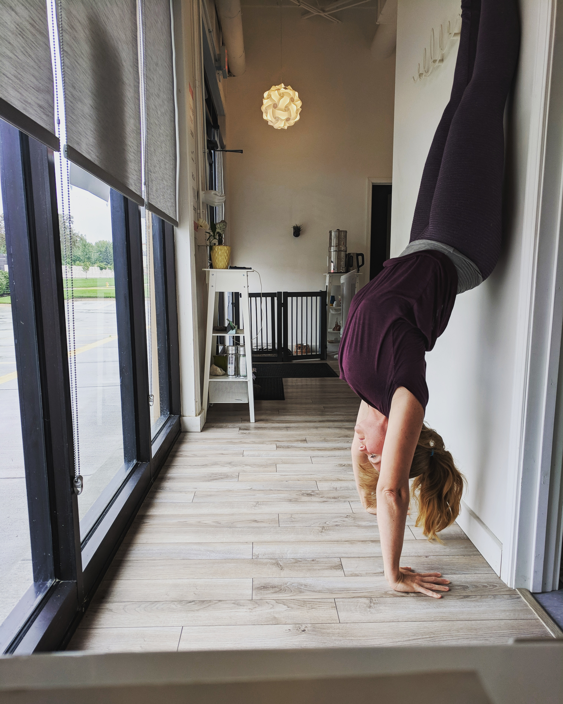

Yoga
After having chronic neck pain for almost 20 years, I switched to a plant-based/vegan diet and started practicing yoga consistently. Within a week the pain was gone! Now if I slack in either area, it starts to creep back. A week off yoga or one day of processed sugars and dairy and it's like my neck is on fire again. How incredible to realize I had the power all along! There are so many evidence-based benefits to yoga. It is an ancient practice that promotes relaxation and reduces stress and you can make it as spiritual or physical as you want. Maybe you lie in Savasana and listen to a guided meditation or just tune in to your breath. Maybe you do handstands in a group class or prefer a one on one setting. Perhaps you practice in your home with a video online. You can find free videos on YouTube, inspiration on Instagram or have access to various levels and styles on yogaglow.com. Whatever your level or interest- a slow, restorative session or a sweaty power yoga class, you can find a good fit.
Finding inner balance, self-love and patience on the mat organically flows to life off the mat. I don't know about you, but I could definitely benefit from taking a deep breath before addressing a challenging parent moment and yoga brings that awareness and patience to me. Yoga is for everybody. You don't have to touch your toes or break a sweat but you certainly may. It's such an individual practice for self-growth and everyone checks their ego and leaves judgment at the door. It meets you where you are at. I will have my 100-hour certification in Yoga Nidra and Restorative Yoga through Evolve to Harmony. It's also great fun and extremely beneficial to include kids. I use restorative yoga to help those sensitive hearts and busy brains that can get to spinning before bedtime. It helps them ease gently into a peaceful sleep, feeling grounded, calm and stable. To take a class with me visit www.hotyogaatindigo.com for the schedule.